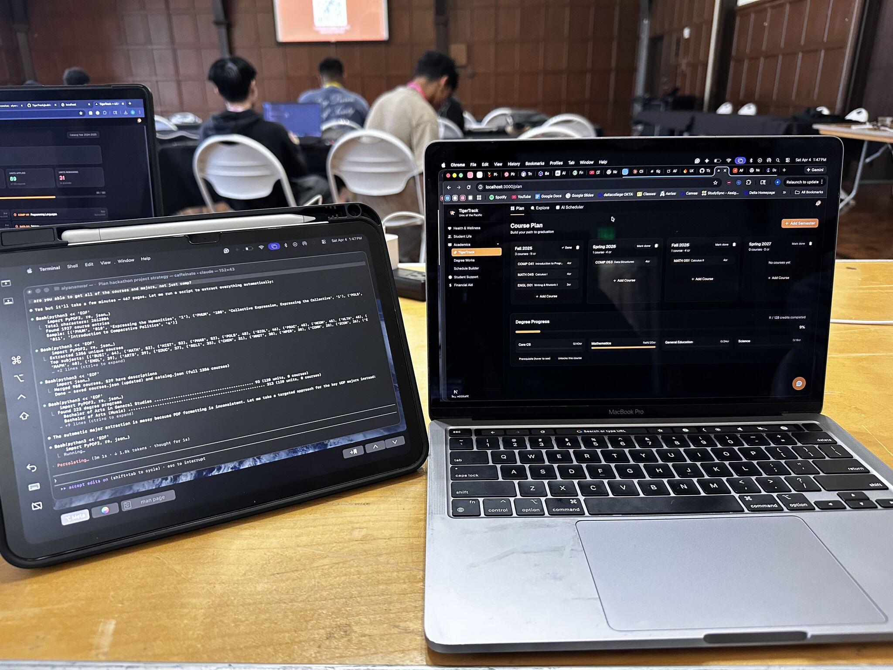
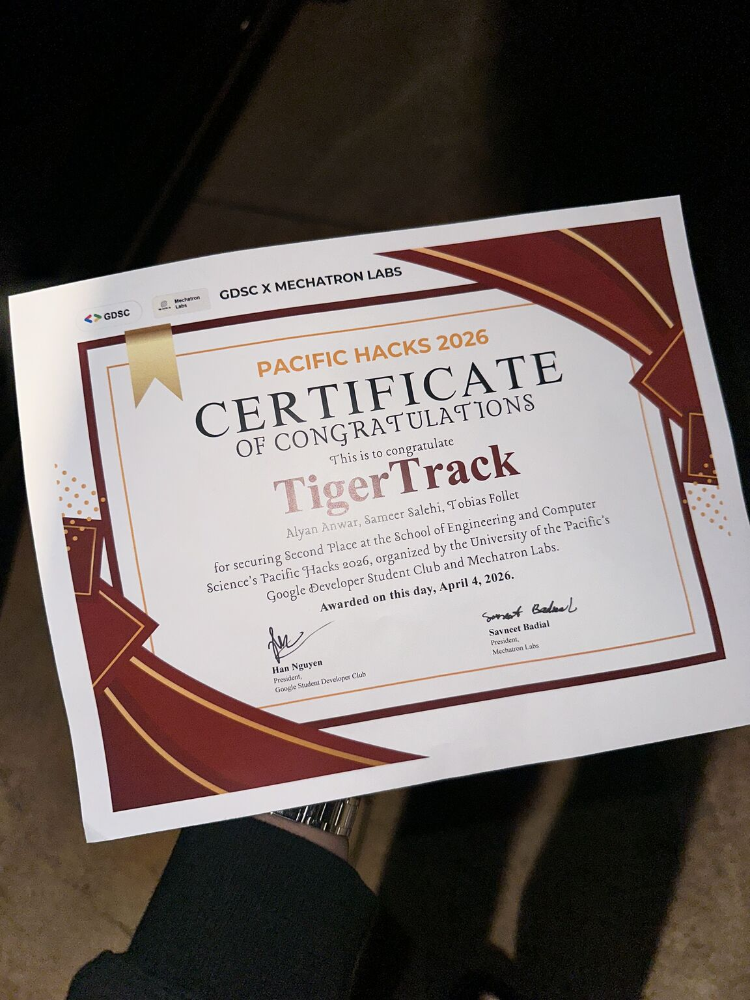
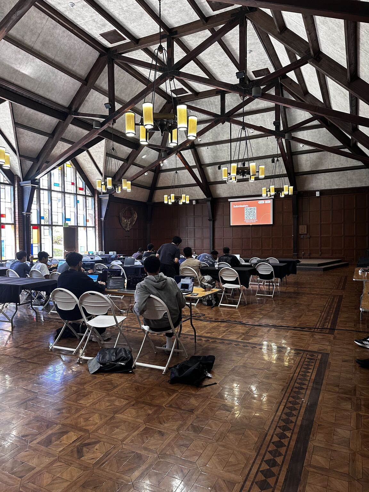

TigerTrack
AI-powered course planner for University of the Pacific students, built in 11 hours at PacificHacks with a 3-person team. Now greenlit by UOP for official adoption and actively developed post-hackathon.
LIVE · active development · DegreeWorks API integration next
Screenshots



Overview
TigerTrack is an AI-powered academic planning workspace built for University of the Pacific students. We built it at PacificHacks, UOP's annual hackathon, in 11 hours as a 3-person team. After the hackathon, the University of the Pacific officially greenlit TigerTrack for adoption, and development has continued with real students in mind.
The problem it solves: UOP students have to jump between DegreeWorks (to see what they've completed), College Scheduler (to search for courses), and their own notes just to answer basic questions like "what can I take next semester?" TigerTrack collapses all of that into one place, with an AI layer on top that actually knows your academic profile.
The app shipped with 988 real UOP catalog entries across 77 subjects, live plan persistence per user, a prerequisite-aware algorithmic scheduler, and an AI chatbot grounded in the student's actual degree audit. Post-hackathon, the team is working on deeper DegreeWorks API integration and single sign-on via the university's identity provider.
Features
- Course Plan: Semester-by-semester drag-and-drop planning board. Add and remove courses, move them between semesters, and see prerequisite conflicts highlighted in real time. Plan persists to Firebase per user account.
- DegreeWorks View: Full audit dashboard: completed requirements, in-progress courses, GPA, units applied, and requirement block status, all pulled from real DegreeWorks data.
- Degree Progress: Live progress bars for Core CS, Mathematics, GE, and Science requirements, powered by actual DegreeWorks data.
- Explore: Browse and search 988 real UOP courses with fuzzy search, subject filtering, and credit range filtering.
- AI Scheduler: Automatically generates a personalized multi-semester graduation plan based on your outstanding DegreeWorks requirements, completed courses, and target credits per semester. Uses a custom prerequisite-aware topological scheduling algorithm, no external AI call.
- Tiger Advisor: Floating AI chat assistant (powered by Groq's llama-3.3-70b-versatile) that knows your full academic profile. Answers questions about prerequisites, graduation requirements, and what to take next, all grounded in your actual plan.
- Export: Download your plan as a PDF or export to Google Calendar / Apple Calendar as a .ics file.
Tech Stack
| Tool | Role |
|---|---|
| Next.js (App Router, TypeScript) | Framework, routing, pages, serverless API endpoints |
| Tailwind CSS v4 | All styling and layout |
| Clerk | User authentication and session management |
| Firebase Firestore | Stores each student's course plan, keyed by user ID |
| Groq API (llama-3.3-70b-versatile) | Powers the Tiger Advisor AI chatbot |
| Custom Algorithmic Scheduler | Prerequisite-aware topological scheduling in TypeScript, no external AI |
| @dnd-kit | Drag-and-drop in the course plan board |
| Vercel | Hosting with automatic deploys on every GitHub push |
How We Built It
The hackathon was 11 hours. I wrote the build guide ahead of time to map out the data strategy, tech stack, and hour-by-hour plan before we even opened our laptops. The most critical step was data collection, we used real DegreeWorks audit data and scraped course information from UOP's College Scheduler portal to populate the app with actual content.
- Hours 1–2: Project setup, MyPacific-style shell layout, Clerk auth, Firebase connection
- Hours 3–4: Core Plan page, SemesterCard, CourseCard, drag-and-drop with dnd-kit, Firebase persistence
- Hour 5: Explore page with fuzzy search across 988 courses using Fuse.js
- Hours 6–7: AI Scheduler, custom topological scheduling algorithm, Gemini → Groq switch mid-hackathon when we hit Gemini's free tier limits
- Hour 8: Tiger Advisor chatbot, DegreeWorks data integration, prerequisite conflict highlighting
- Hours 9–11: Export features (PDF + .ics), demo prep, Vercel deploy
The most interesting engineering challenge was the AI Scheduler. We originally planned to use Gemini to generate schedules, but the prompt → parse → validate loop was fragile. We ended up writing a deterministic topological scheduling algorithm in TypeScript instead, it reads outstanding DegreeWorks requirements, resolves prerequisite chains, and distributes courses across semesters based on the student's target credit load. More reliable, faster, and no API call needed.
The Tiger Advisor chatbot switched from Gemini to Groq mid-hackathon after hitting the free tier quota. Groq's llama-3.3-70b was faster and handled longer context better for the academic planning prompts.
What I Learned
- Next.js App Router and serverless API routes in a production deployment
- Clerk for auth, drop-in login flow that took under an hour to wire up
- Firebase Firestore real-time database design and security rules
- Groq API and prompt engineering for context-aware AI responses
- Topological sorting as a practical scheduling algorithm, not just a CS concept
- How to scope a hackathon project, what to cut, what to keep, and how to build for demo impact
- Scraping and structuring real institutional data (DegreeWorks, College Scheduler)
Team
- Alyan Anwar
- Sameer Salehi
- Tobias Follett
University of the Pacific — PacificHacks, April 2026
Links